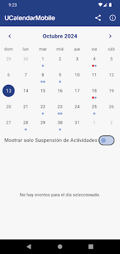

Sobre mí
Soy un apasionado estudiante de Ingeniería Civil Informática a punto de egresar, con especialización en desarrollo móvil con Flutter. Aunque mi enfoque principal ha sido el desarrollo móvil, también tengo experiencia manejando frameworks web como React y creando backends con Express, utilizando MySQL y PostgreSQL. He desarrollado scripts en Node.js para automatizar tareas repetitivas en el navegador, optimizando procesos.
He administrado servidores para alojar páginas hechas en React y wikis. Me apasiona resolver problemas reales, y disfruto colaborar en equipos para construir soluciones funcionales e innovadoras. Busco crecer en entornos donde pueda aportar valor y aprender junto a otros, creando proyectos que marquen la diferencia.
UCalendarMobile
App para estudiantes de la UCM diseñada para facilitar el acceso a eventos académicos, feriados y suspensiones de actividades. Posee un filtro que muestra solo los eventos donde se suspenden actividades, ayudando a los estudiantes a mantenerse informados.

FallWatcher
Proyecto IoT para la detección de caídas en adultos mayores utilizando ESP8266 y Flutter. Diseñé e integré la aplicación móvil, el backend en MQTT y los dispositivos IoT, logrando notificaciones en tiempo real para cuidadores, con confirmación del estado del usuario y seguimiento eficiente.
Basho
Plataforma en desarrollo para monitoreo en tiempo real de vehículos, personas y mascotas con ESP8266, usando Firebase y MQTT.